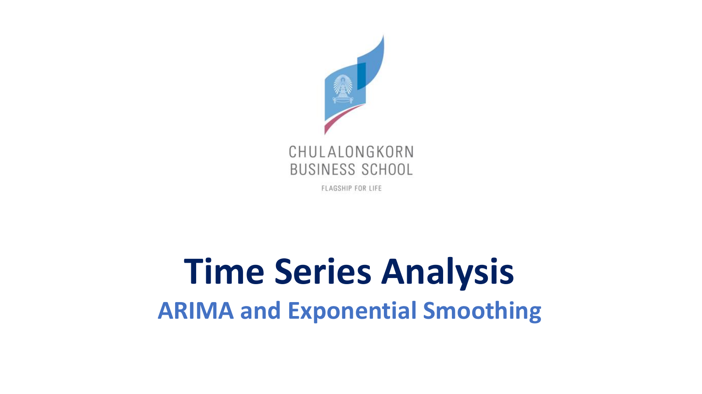
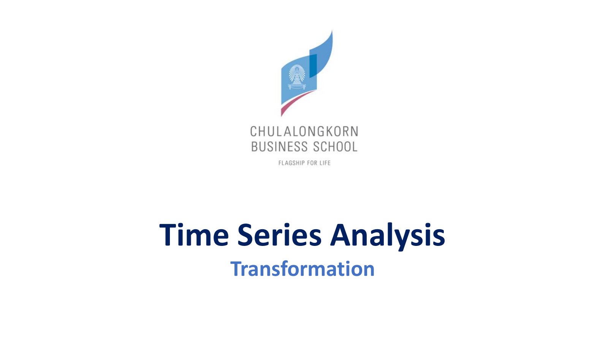
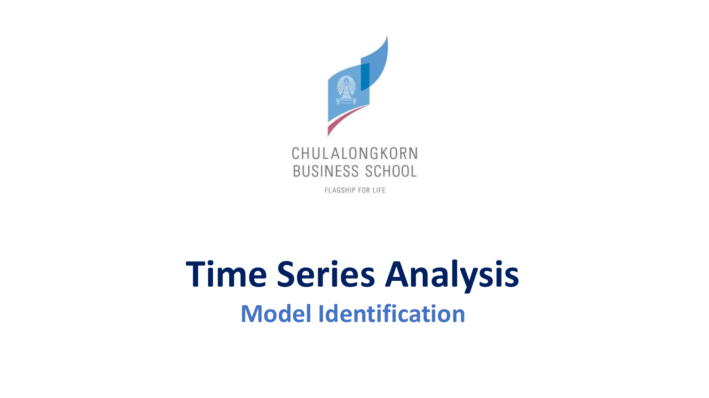
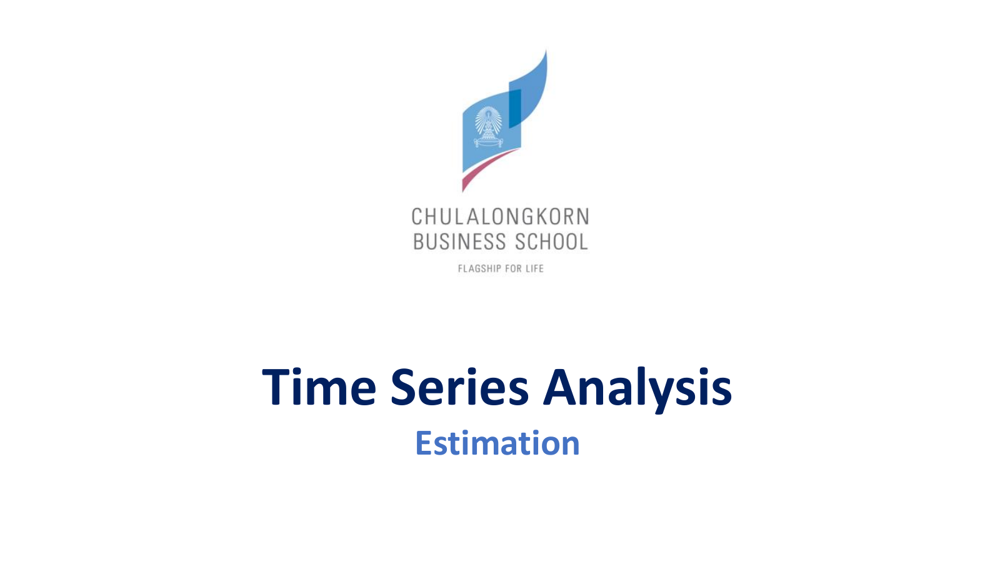

Slide 7 — ARIMA and Exponential Smoothing (39 หน้า) และใบงาน ARMA_properties (10 หน้า) · คลิป Class 7-1 (47:42), Class 7-2 (1:02:47), ต้นคาบ Class 8 (0:00–0:26)
Lesson 5–6 ให้ "ตัวละคร" ครบแล้ว: AR, MA, ARMA และ ARIMA บทนี้คือ "วิธีใช้" กับข้อมูลจริงหนึ่งชุด ตั้งแต่ดูกราฟจนได้ค่าพารามิเตอร์ ตามลำดับที่อาจารย์สอน
| หัวข้อ | เนื้อหา | สไลด์ |
|---|---|---|
| 1 | ทบทวน: ACF/PACF และ ARIMA จาก simulation | ARMA_properties 1–2 |
| 2 | ARIMA(0,1,1) เท่ากับ simple exponential smoothing | 1–4 |
| 3 | Transformation และ Box-Cox: ข้อมูล electricity | 5–12 |
| 4 | Model identification: ACF/PACF/EACF, d และ ADF | 13–17 |
| 5 | AIC และ BIC: ตัวอย่าง times.txt | 18–23 |
| 6 | สรุปขั้นตอนเลือกโมเดล | 24–27 |
| 7 | Invertibility, causality และ parameter redundancy | ARMA_properties 3–4 |
| 8 | โจทย์สี่ข้อของใบงาน และการเขียน ψ, π weights | ARMA_properties 4 |
| 9 | EACF ทฤษฎีและจากข้อมูล | ARMA_properties 5–10 |
| 10 | Estimation: method of moments และ Yule-Walker | 28–34 |
| 11 | MLE และการอ่าน output ของ arima() | 35–39 |
| 12 | ควิซ 5 | — |
| 13 | แบบฝึกห้าแบบ | — |
ใบงาน ARMA_properties ที่อาจารย์แจกใน Class 6 เริ่มด้วยหน้าทบทวนที่เว้นว่างให้นักศึกษาเติมเอง หัวข้อนี้เติมคำตอบให้ครบ เพราะเป็นฐานของทุกอย่างในบท
ช่องว่างแรกถาม γ(1) และ γ(2) ของ AR(1) \(X_t=\phi_1X_{t-1}+w_t\) คำตอบจาก Lesson 5: \(\gamma(1)=\phi_1\gamma(0)\), \(\gamma(2)=\phi_1^2\gamma(0)\) โดย \(\gamma(0)=\sigma^2/(1-\phi_1^2)\) สรุปเป็น \(\gamma(h)=\phi_1^h\gamma(0)\) และ \(\rho(h)=\phi_1^h\) ช่อง "PACF for AR(1)" คือ \(\phi_{11}=\phi_1\) และ \(\phi_{hh}=0\) เมื่อ h ≥ 2 เช่น φ₁ = 0.6 ได้ ACF 0.6, 0.36, 0.216 แต่ PACF 0.6, 0, 0

หน้าที่สองให้เติมนิยาม PACF และตาราง ACF/PACF ของสามโมเดล คำตอบจาก Lesson 6: \(\phi_{hh}\) คือ correlation ของ \(X_t\) กับ \(X_{t-h}\) หลังตัดผลของค่าระหว่างกลาง AR(p): ACF tail off, PACF ตัดหลัง lag p; MA(q): ACF ตัดหลัง lag q, PACF tail off; ARMA(p,q): tail off ทั้งคู่ ส่วน sample PACF ใช้ pacf() และเส้นประ \(\pm2/\sqrt n\) เหมือน ACF
ต้นคลิป Class 7-1 อาจารย์ทวน ARIMA ด้วย simulation จาก R_codes (Class 7-1, 0:00:14–0:06:16) และอธิบายเหตุผลของการ simulate สองข้อ: จำลอง scenario เพื่อศึกษาว่า pattern เป็นอย่างไร และเพื่อรู้ว่าข้อมูลจริงที่มี pattern แบบนี้ตรงกับโมเดลไหน (Class 7-1, 0:05:52)

arima.sim(list(order=c(0,1,1), ma=c(-0.5)), n=150)อาจารย์อ่านโค้ดว่า "ตัว θ คือ −0.5" ACF ของอนุกรมเดิมคือ 0.934, 0.899, 0.849 และยังเหลือ 0.537 ที่ lag 10 "ลงช้า ๆ แบบช้ากว่า AR(p) ด้วยซ้ำ" (Class 7-1, 0:03:02) หลัง difference ครั้งเดียว ACF เหลือแค่ lag 1 = −0.376 แล้วอยู่ในเส้น (0.099, 0.007) ตรงกับ MA(1) ที่ θ = −0.5 ซึ่งมีค่าทฤษฎี \(-0.5/1.25=-0.4\) ฟิต arima(ima11, order=c(0,1,1)) ได้ ma1 = −0.360 (s.e. 0.072) ห่างจาก −0.5 ราวสองเท่าของ s.e. เป็นตัวอย่างว่า 150 ค่ายังให้ค่าประมาณคลาดได้

ma = c(-0.3, 0.3)IMA(2,2) "trend แรงหน่อย" (Class 7-1, 0:05:05) ACF ของอนุกรมเดิม 0.98, 0.96, 0.94 และหลัง difference ครั้งแรกยังเป็น 0.960, 0.929, 0.886 ลดช้าเหมือนเดิม แปลว่ายังมี trend เหลือ หลัง difference ครั้งที่สองได้ −0.247, 0.325 แล้ว 0.001, −0.015 จึงเป็น MA(2) ค่าทฤษฎีคือ \(\rho_1=(-0.3-0.09)/1.18=-0.331\) และ \(\rho_2=0.3/1.18=0.254\) อาจารย์เตือนว่า simulation "อาจไม่ perfect รันใหม่อาจชัดกว่า"

ar = 0.5, ma = 0.5 (ส่วน Extra ของ R_codes)ส่วน Extra ของโค้ดคือ ARIMA(1,1,1) หลัง difference ได้ ARMA(1,1) ซึ่ง ACF ไม่ตัด: 0.750, 0.407, 0.185, 0.027 (ทฤษฎี 0.714, 0.357, 0.179, 0.089 ลดทีละครึ่งตาม φ = 0.5) และ PACF ก็ไม่ตัดชัด: 0.750, −0.353, 0.096, −0.146 นี่คือกรณี "mix กัน" ที่อ่านจาก ACF/PACF ยาก และเป็นเหตุผลของ AIC/BIC และ EACF ในหัวข้อ 4–5

อาจารย์เริ่มว่า "ต้องเข้าใจก่อนว่ามันเป็นคนละโมเดลกัน" Box-Jenkins กับ exponential smoothing มาจากแนวคิดต่างกัน และ MA ของ smoothing ไม่ใช่ MA ของ Box-Jenkins แต่บางกรณีของ p, d, q สองฝั่ง "เทียบกันได้" (Class 7-1, 0:06:35–0:07:38)

สไลด์นี้เริ่มจาก ARIMA(0,1,1) ที่ผลต่างมี mean 0 แล้วเขียนค่าของเวลา t + 1 เพื่อหาค่าพยากรณ์ กุญแจของการพิสูจน์คือมอง \(w_{t+1}\) เป็น "ความคลาดเคลื่อนของการพยากรณ์" ซึ่งทำให้แทนค่าที่สังเกตไม่ได้ด้วยค่าที่คำนวณได้ ขั้นละเอียดอยู่ในกล่องข้างล่าง
\(X_t-X_{t-1}=w_t+\theta w_{t-1}\) จึงได้ \(X_{t+1}=X_t+w_{t+1}+\theta w_t\)
อาจารย์เขียนสีแดงบนสไลด์ว่า \(e_t=Y_t-\hat Y_t\) เหมือน regression จึงได้ \(w_{t+1}=X_{t+1}-\hat X_{t+1}\) (Class 7-1, 0:08:29)
\(X_{t+1}=X_t+X_{t+1}-\hat X_{t+1}+\theta w_t\) ตัด \(X_{t+1}\) ทั้งสองข้าง ได้ \(\hat X_{t+1}=X_t+\theta w_t\)
\(\hat X_{t+1}=X_t+\theta(X_t-\hat X_t)=(1+\theta)X_t-\theta\hat X_t\)
จะได้ \(-\theta=1-\alpha\) และ \(\hat X_{t+1}=\alpha X_t+(1-\alpha)\hat X_t\) ซึ่งคือ \(F_{t+1}=\alpha X_t+(1-\alpha)F_t\) ของ Lesson 4 "ถ้าจำไม่ได้ไปเปิดสไลด์ต้น ๆ"

สไลด์สรุปว่า "Optimal Exponential Smoothing in R" ทำได้โดยฟิต ARIMA(0,1,1) แล้วแปลง θ เป็น α "พารามิเตอร์มันสามารถ transfer หรือคำนวณเทียบกันได้" (Class 7-1, 0:11:44) ตรวจกับข้อมูล IMA(1,1) ในหัวข้อ 1: arima(ima11, order=c(0,1,1)) ได้ θ̂ = −0.3602 จึงคาดว่า α = 1 − 0.3602 = 0.6398 และ ets(ima11, model="ANN") ได้ α̂ = 0.6376 ค่าพยากรณ์ถัดไปคือ 9.0028 และ 9.0041 แทบเท่ากัน ต่างเล็กน้อยเพราะสองคำสั่งเริ่มต้นและ optimize ต่างกัน

Holt (double exponential smoothing) ใช้สองน้ำหนักสำหรับ level และ trend ซึ่ง level คือ SES ของข้อมูล และ trend คือ SES ของผลต่างครั้งแรก จึงเทียบได้กับ ARIMA(0,2,2) ที่ไม่มีค่าคงที่ อาจารย์ "จะไม่ลงดีเทล" ของการพิสูจน์ (Class 7-1, 0:12:06) เหตุผลเชิงความหมาย: Holt ต้องการ difference สองครั้งเพราะพยากรณ์เป็นเส้นตรงที่ความชันก็เปลี่ยนได้ ส่วน MA(2) หลัง difference สองครั้งคือสองน้ำหนัก α และ β

อนุกรมไม่นิ่งเกิดจากสองสาเหตุหลัก (Class 7-1, 0:12:36–0:13:13): trend ซึ่งทำให้ ACF ลดช้าและแก้ด้วย differencing กับความแกว่งที่ไม่คงที่ (non-constant variance) ซึ่ง differencing แก้ไม่ได้ หลักของอาจารย์คือ "ทำให้มันนิ่งก่อนแล้วศึกษาเชิงลึก ไม่ว่าจะใช้โมเดลไหน"

ความแกว่งที่คงที่เทียบได้กับ homoscedasticity ใน regression ถ้าช่วงแรกแกว่งน้อยแต่ช่วงหลังแกว่งมากคือ heteroscedasticity อาจารย์ชี้ว่านี่เป็นสัญญาณของ lack of fit ด้วย เพราะช่วงที่แกว่งมากคือช่วงที่โมเดลพยากรณ์ไม่ดี (Class 7-1, 0:14:12) วิธีที่ง่ายที่สุดคือ log ซึ่ง "บีบข้อมูล" ตัวอย่าง: ยอดขาย 100 กับ 110 ต่างกัน 10 ส่วน 1,000 กับ 1,100 ต่างกัน 100 ความแกว่งดูโตขึ้นสิบเท่า แต่หลัง log ทั้งสองคู่ต่างกัน \(\ln1.1=0.095\) เท่ากัน ความแกว่งที่เป็นสัดส่วนจึงกลายเป็นคงที่ สไลด์ย้ำว่า transformation เป็น "first step" ทำก่อน differencing และหลังจากนั้น "ทำโมเดลกับ log X_t ไม่ใช่ X_t" (Class 7-1, 0:17:35)

Box-Cox (1964) รวม power transformation ไว้ในสูตรเดียว \(T(X_t)=(X_t^\lambda-1)/\lambda\) เมื่อ λ ≠ 0 อาจารย์เขียนข้างสไลด์ว่า λ = 1/2 คือ \(\sqrt x\) และ λ = 1/10 คือ \(x^{1/10}\) (หลังเลื่อนและย่อขนาด) จุดที่ต้องระวัง: "λ = 0 ไม่ใช่ x⁰ แต่เป็น ln x" (Class 7-1, 0:18:30) เหตุผล: เมื่อ λ → 0 \((x^\lambda-1)/\lambda\to\ln x\) เช่น x = 10, λ = 0.001 ได้ \((10^{0.001}-1)/0.001=2.3052\) ใกล้ \(\ln10=2.3026\) และ λ = 1 คือ x − 1 ซึ่งแทบไม่เปลี่ยนรูปข้อมูล
อาจารย์ชอบ log มากกว่า √ เพราะแปลงกลับด้วย exponential ได้ง่าย และค่าที่แปลงกลับไม่ติดลบ เหมาะกับยอดขาย (Class 7-1, 0:16:36) λ อย่าง 1/10 หรือ 1/6 "แปลงกลับยากและความหมายแปลยาก"

BoxCox.ar() จาก package TSA หาค่า λ ที่ทำให้ likelihood สูงสุด พร้อมช่วงเชื่อมั่น 95% กฎของอาจารย์: ถ้าช่วงคลุม 0 ให้ใช้ log ถ้าไม่คลุม 0 ต้องใช้ transformation รูปแบบอื่น (Class 7-1, 0:19:47) คำสั่งนี้รันนานเพราะต้องประมาณ MLE ซ้ำหลายครั้ง (Class 7-1, 0:26:15)

ข้อมูล electricity ใน TSA มี 396 เดือน มีทั้ง trend และ seasonal (Class 7-1, 0:20:58) และความแกว่งรอบเส้น trend กว้างขึ้นในช่วงหลัง: ส่วนเบี่ยงเบนมาตรฐานของ 5 ปีแรก (1973–1977) คือ 14,408 แต่ของ 5 ปีสุดท้าย (2001–2005) คือ 31,401 มากกว่าสองเท่า สาเหตุส่วนหนึ่งคือระดับที่สูงขึ้น ซึ่งเป็นกรณีที่ log แก้ได้

กราฟ log-likelihood เป็นรูปโค้งคว่ำ (concave) ค่าสูงสุดอยู่ที่ λ = −0.1 และช่วงเชื่อมั่น 95% คือ −0.4 ถึง 0.2 ช่วงนี้คลุม 0 จึงใช้ log ตามกฎของอาจารย์ (Class 7-1, 0:21:57) ค่า λ = 1 (ไม่แปลง) อยู่นอกช่วงไกลมาก ยืนยันว่าต้องแปลงข้อมูลชุดนี้

หลัง log ความกว้างของการแกว่งตามฤดูกาลใกล้เคียงกันตลอดช่วง ปัญหา non-constant variance หายไป แต่ trend ขาขึ้นยังอยู่ ขั้นถัดไปจึงเป็น differencing (Class 7-1, 0:23:00) คำถามในห้อง: log ก่อนหรือ difference ก่อน คำตอบของอาจารย์คือ log ก่อน แล้วค่อย difference (Class 7-1, 0:23:11) เหตุผลเพิ่มเติม: ถ้า difference ก่อน ค่าที่ได้ติดลบได้ ซึ่ง log ไม่ได้ และ difference ของ log \(\ln X_t-\ln X_{t-1}=\ln(X_t/X_{t-1})\) คืออัตราการเติบโตโดยประมาณ แปลความง่าย ตอนพยากรณ์ต้องแปลงกลับด้วย exponential (Class 7-1, 0:23:51)

ACF ของ \(\nabla\log X_t\) ไม่ลดช้าแล้ว แต่มียอดสูงที่ lag 1.0, 2.0, 3.0 ของแกนนอน ซึ่งในข้อมูลรายเดือนหมายถึง lag 12, 24, 36: ค่าเท่ากับ 0.866, 0.836 และ 0.812 แปลว่าเดือนเดียวกันของแต่ละปียังสัมพันธ์กันมาก "หน้าร้อนใช้ไฟมาก (เปิดแอร์)" (Class 7-1, 0:27:56) ARIMA ธรรมดาจัดการ pattern นี้ไม่ได้ ต้องใช้ SARIMA ใน Lesson 9 การบ้านของอาจารย์คือทำ ACF ของ \(X_t\) เดิมแล้วเทียบกับของ diff log (Class 7-1, 0:27:11)

identification คือการหา "ค่า p ที่เป็นไปได้ ค่า q ที่เป็นไปได้" (Class 7-1, 0:28:28–0:30:38) ไม่ใช่คำตอบเดียว เครื่องมือมีสองกลุ่ม: กราฟ (ACF/PACF/EACF) และตัวเลข (AIC/BIC)

ทบทวนจาก Lesson 6: sample ACF หา q ของ MA, sample PACF หา p ของ AR และสำหรับ ARMA ผสมต้องใช้ทั้ง ACF, PACF และ EACF ร่วมกัน อาจารย์พูดสลับในคลิปแล้วแก้ตัวเอง (Class 7-1, 0:28:44) วิธีจำคือ "ตัวที่ตัดบอกอันดับ"

สัญญาณที่ชัดที่สุดของความไม่นิ่งคือ sample ACF ลดช้ามาก เพราะอนุกรมไม่นิ่ง "hang together" ค่าติดกันใกล้กันตลอด เช่น IMA(1,1) ในหัวข้อ 1 ที่ ACF lag 10 ยังเป็น 0.537 กฎคือ: ถ้ามี trend และ ACF ลดช้า ให้ difference ครั้งแรก ถ้า ACF ของผลต่างลดเร็วเหมือน ARMA ที่นิ่ง ให้ใช้ d = 1 แล้วหา p, q จากผลต่างนั้น

ถ้าผลต่างครั้งแรกยังลดช้า เช่น IMA(2,2) ในหัวข้อ 1 (0.960, 0.929, 0.886) ให้ difference อีกครั้ง d = 2 และแทบไม่ต้องใช้ d > 2 อาจารย์บอก d = 1 ถ้ามี trend, d = 2 ถ้า trend แรงขึ้น หรืออาจต้อง log ด้วย (Class 7-1, 0:30:21) ถ้าต้อง transform ให้ทำ "up front" ก่อน difference ตามหัวข้อ 3

ADF test ใช้ตรวจความนิ่งแทนการดูด้วยตา อาจารย์เน้น "H1 คือนิ่ง H0 คือไม่นิ่ง อย่าลืม" (Class 7-1, 0:30:52) ตัวอย่างบนสไลด์คือ times.txt: Dickey-Fuller = −7.1518, Lag order = 5, p-value = 0.01 น้อยกว่า 0.05 จึง reject H0 สรุปว่านิ่ง ใช้ d = 0 เมื่อรันจริง R เตือนว่า p-value smaller than printed p-value คือค่าจริงน้อยกว่า 0.01 อีก Lag order 5 มาจากค่าเริ่มต้น \(\lfloor(n-1)^{1/3}\rfloor=\lfloor149^{1/3}\rfloor=5\) ข้อสังเกต: สไลด์เขียนว่า adf.test อยู่ใน library TSA แต่คำสั่งนี้มาจาก package tseries (ใช้ใน Lesson 3)

เมื่อ ACF/PACF ให้หลายโมเดลที่เป็นไปได้ ต้องมีตัวเลขช่วยเลือก AIC (textbook Section 2.2 หน้า 53) คือ \(\mathrm{AIC}=-2\ln L+2k\) โดย L คือ likelihood สูงสุด และ k คือจำนวนพารามิเตอร์ อาจารย์อธิบาย likelihood ด้วยภาษาง่าย ๆ ว่า "โอกาสที่โมเดลนี้จะเกิด" take log เพื่อบีบค่าใหญ่ ๆ แต่ทิศทางเหมือนเดิม (Class 7-1, 0:32:15)
เรื่อง k: สไลด์เขียนว่าไม่นับ white noise variance แต่อาจารย์บอกว่า intercept และ σ² ก็เป็นพารามิเตอร์ที่โมเดลประมาณ (Class 7-1, 0:34:16) R นับแบบอาจารย์ ตรวจได้จาก ARMA(1,1) ของ times: log likelihood = −247.66 ถ้า k = 4 (φ, θ, intercept, σ²) ได้ \(495.32+8=503.32\) ตรงกับ aic = 503.31 ที่ R รายงาน การนับต่างกันไม่เปลี่ยนการเลือกโมเดล เพราะทุกโมเดลถูกบวกค่าคงที่เท่ากัน

คำถามในคลิป "AIC มากดีหรือน้อยดี" คำตอบคือน้อยดี เพราะ −2 ln L ยิ่งน้อยแปลว่า likelihood ยิ่งสูง (Class 7-1, 0:35:09) ส่วน 2k คือ penalty ที่ไม่ให้โมเดลซับซ้อนเกินจำเป็น ตามหลัก parsimony "ให้มันเท่าที่จำเป็น" ตัวอย่างจาก times: ARMA(2,1) มี −2 ln L = 491.28 ส่วน ARMA(2,2) ฟิตได้ดีขึ้นเล็กน้อย แต่ penalty เพิ่ม 2 ทำให้ AIC 502.35 สูงกว่า 501.28 จึงไม่คุ้มที่จะเพิ่มพารามิเตอร์

BIC เปลี่ยน penalty จาก 2 เป็น ln n ต่อพารามิเตอร์ เมื่อ n = 150 ได้ ln 150 = 5.01 หนักกว่า AIC ราว 2.5 เท่า BIC จึงเลือกโมเดลที่เล็กกว่า อาจารย์เตือนเรื่องซอฟต์แวร์: SAS หรือบางโปรแกรมใช้ +2 log L ทำให้ยิ่งมากยิ่งดี แต่ใน R ยิ่งน้อยยิ่งดี (Class 7-1, 0:36:54)

times.txt มี 150 ค่า mean 0.0198 แกว่งรอบศูนย์ไม่มี trend ความแกว่งใกล้เคียงกันตลอด ADF ในหัวข้อ 4 ยืนยันว่านิ่ง จึงใช้ d = 0 และไปดู ACF/PACF ได้เลย

sample ACF = −0.771, 0.382, −0.090, −0.077 ทะลุเส้น ±0.163 ที่ lag 1, 2 จึงอาจเป็น MA(2) sample PACF = −0.771, −0.524, −0.153, −0.135 ทะลุเส้นชัดที่ lag 1, 2 และ lag 3 ใกล้เส้น จึงอาจเป็น AR(2) "ไม่เคลียร์เพราะเป็น data จริง" อาจารย์จึงตั้ง candidate ว่า p เป็น 1 หรือ 2 และ q เป็น 1 หรือ 2 (Class 7-1, 0:37:12–0:38:05) "เราจะมีโมเดลอยู่ 2–3 โมเดลในใจ"
table1 <- array(0, c(4,4))
for (i in 1:4) {
for (j in 1:4) {
aic <- AIC(arima(data, order=c(i-1,0,j-1), method="ML"))
table1[i,j] <- aic
}
}
# BIC: AIC(arima(...), k = log(length(data)))| โค้ด | ทำอะไร |
|---|---|
| array(0, c(4,4)) | ตาราง 4×4 ค่าศูนย์ไว้เก็บผล |
| order=c(i-1,0,j-1) | i, j วิ่ง 1 ถึง 4 จึงได้ p, q วิ่ง 0 ถึง 3 แถวคือ p คอลัมน์คือ q ช่อง [1,1] คือ ARMA(0,0) (Class 7-1, 0:41:34) |
| AIC(..., k = log(n)) | ฟังก์ชัน AIC ใช้ penalty k ต่อพารามิเตอร์ ใส่ log(n) จึงได้ BIC |

AIC ต่ำสุดสามอันดับ (Class 7-1, 0:43:41): ARMA(2,1) 501.2778 (แถว 3 คอลัมน์ 2), ARMA(1,2) 502.2742 และ ARMA(2,2) 502.3499 BIC ต่ำสุดสามอันดับ: ARMA(1,1) 515.3553, ARMA(2,1) 516.3310 และ ARMA(1,2) 517.3273 ARMA(2,1) และ ARMA(1,2) อยู่ในทั้งสองชุด ส่วน BIC เลือก ARMA(1,1) ซึ่ง AIC ไม่เลือก เพราะ penalty ของ BIC หนักกว่า ขั้นถัดไปคือนำ candidate ไปตรวจ diagnostic และเทียบความแม่นยำของการพยากรณ์ ซึ่งเป็นเนื้อหา Lesson 8 อีกจุดที่ควรสังเกตคือคอลัมน์แรก (q = 0, AR ล้วน) มี AIC สูงทุกแถว เช่น AR(1) 563.29 แปลว่าต้องมีส่วน MA

ขั้นที่ 1 วาดกราฟอนุกรม ดู trend, seasonal, outlier และความแกว่งที่ไม่คงที่ ถ้าต้องแปลงให้ลองหลายแบบแล้วเลือกตัวที่ทำให้ความแกว่งคงที่ที่สุด และทำก่อน difference เสมอ ตรงกับ electricity: log ก่อน แล้วจึง difference

ขั้นที่ 2 ดู ACF/PACF ของข้อมูลเดิมหรือที่แปลงแล้ว ถ้า ACF ลดช้ามากให้ difference อาจารย์ย้ำว่า "อย่าให้ differencing เยอะเกินไป" (Class 7-1, 0:45:38) เพราะ overdifferencing ทำให้ระบุโมเดลยาก ตัวอย่างจาก Lesson 6: difference white noise ที่นิ่งอยู่แล้วจะได้ MA(1) ที่ θ = −1 ซึ่ง ρ₁ = −0.5 เป็นโครงสร้างเทียมที่ข้อมูลเดิมไม่มี

ขั้นที่ 3 ใช้ ACF, PACF, EACF ของอนุกรมที่แปลงและ difference แล้ว เทียบกับรูปแบบทฤษฎี p และ q มักไม่เกิน 4 (ไม่นับ seasonal) ข้อมูลที่น้อยกว่า 50 ค่าระบุโมเดลได้ยาก เพราะเส้นประ \(2/\sqrt{n}\) กว้าง เช่น n = 36 ได้ ±0.33 และใช้ AIC/BIC ประกอบ อาจารย์เรียกการใช้ตัวเลขควบคู่กับกราฟว่า "โครงคู่" (Class 7-1, 0:46:30)

ข้อสรุปของส่วนนี้คือหลังทำทุกขั้นแล้ว แทบไม่มีโมเดลเดียวที่ชัดเจน จะได้ candidate จำนวนน้อย แล้วต่อด้วย estimation, diagnostic และ forecast โดยเทียบกับโมเดลประเภทอื่นด้วย เช่น ETS "เพราะต้องการตัวที่ดีที่สุด" (Class 7-1, 0:47:19) ตัวอย่าง times ได้ candidate คือ ARMA(2,1), ARMA(1,2), ARMA(2,2) และ ARMA(1,1)
Class 7-2 อาจารย์อัดที่คณะ เขียนมือใต้กล้องตามใบงาน ARMA_properties ประเด็นคือ ARMA ที่เขียนได้ไม่ได้มีความหมายทุกตัว ต้องผ่านเงื่อนไขสามข้อ: ไม่ซ้ำซ้อน (no redundancy), causal และ invertible

ผังของ Box-Jenkins คือ plot → นิ่งไหม (ไม่นิ่งก็ difference) → identification → estimation → โมเดลเพียงพอไหม (ไม่พอก็กลับไปแก้) → forecast ซึ่งตรงกับหัวข้อ 4–6 และ Lesson 8 ส่วนล่างของหน้านี้นิยาม parameter redundancy: ถ้า Φ(z) และ θ(z) มีตัวประกอบร่วม ตัดทิ้งได้ และโมเดลจะเท่ากับโมเดลอันดับต่ำกว่า ใบงานเขียนสีแดงว่า "We will assume no redundancy" ตัวอย่างง่าย ๆ: \((1-0.5B)X_t=(1-0.5B)w_t\) ดูเหมือน ARMA(1,1) แต่ตัดแล้วเหลือ \(X_t=w_t\) คือ white noise เคยเห็นแล้วใน Example (b) ของ Lesson 6

นิยามบนใบงานเขียนด้วยรากของพหุนาม: causal ถ้า Φ(z) ≠ 0 สำหรับทุก |z| ≤ 1 คือรากทุกตัวของ Φ อยู่นอกวงกลมหนึ่งหน่วย แล้ว \(X_t\) เขียนได้ด้วย w ปัจจุบันและอดีต invertible ถ้า θ(z) ≠ 0 สำหรับทุก |z| ≤ 1 แล้ว \(w_t\) เขียนได้ด้วย X ปัจจุบันและอดีต คือ \(X_t\) เป็น AR(∞) อาจารย์บอกว่า causality ตรวจ "หลักการเดียวกัน" กับ invertibility แต่ตรวจคนละฟังก์ชัน (Class 7-2, 0:04:36)
\(X_t=w_t-\theta w_{t-1}\) "ขอเป็นลบตรงนี้ก่อน แต่มันคืออันเดียวกัน"
\(w_t=X_t+\theta w_{t-1}\) และ \(w_{t-1}=X_{t-1}+\theta w_{t-2}\) แทนไปเรื่อย ๆ ได้ \(w_t=X_t+\theta X_{t-1}+\theta^2X_{t-2}+\theta^3X_{t-3}+\dots\)
\(X_t=-\theta X_{t-1}-\theta^2X_{t-2}-\dots+w_t\) "คล้าย AR infinite"
อนุกรม \(\theta^j\) ลู่เข้าก็ต่อเมื่อ |θ| < 1 ถ้า θ = 5 น้ำหนัก 5, 25, 125 ของอดีตโตขึ้นเรื่อย ๆ ซึ่งไม่มีความหมาย "พารามิเตอร์ไม่สามารถเป็นอะไรตามใจได้"
ทฤษฎีบทที่อาจารย์ให้ "จดครับ ใช้ได้ทุก MA" (Class 7-2, 0:15:05)
"มีอันใดอันหนึ่งน้อยกว่า 1 ถือว่าไม่ invertible เลย" (Class 7-2, 0:17:32) รากติดลบให้ดูค่าสัมบูรณ์ รากเชิงซ้อนดู modulus แต่ "ส่วนใหญ่จะเป็นจำนวนจริง" causal ของ AR คือเงื่อนไขเดียวกับความนิ่งใน Lesson 5–6 และ MA ทุกตัว causal เสมอ AR ทุกตัว invertible เสมอ เพราะไม่มีพหุนามอีกฝั่งให้ตรวจ
อาจารย์ถามว่า "ทำไมต้องแปลง MA(q) เป็น AR(∞) มันอยู่ของมันดี ๆ มี q พารามิเตอร์" (Class 7-2, 0:13:34) คำตอบที่ใช้ได้มีสามข้อ ข้อแรก identifiability: θ กับ 1/θ ให้ ACF เท่ากัน ข้อมูลแยกไม่ออก ต้องมีกฎเลือกตัวเดียว ข้อสอง การคำนวณ: เราไม่เห็น w แต่ถ้า invertible จะคำนวณ \(w_t\) จาก X ในอดีตได้ จึงหา residual, likelihood และค่าพยากรณ์ได้ ข้อสาม ซอฟต์แวร์อย่าง R บังคับให้ θ ที่ประมาณได้อยู่ในบริเวณ invertible
ขั้นตอนของอาจารย์ทุกข้อ: "จัดรูป" ให้เป็น \(\Phi(B)X_t=\theta(B)w_t\) ก่อน เปลี่ยน B เป็น x ตั้งเท่ากับศูนย์ ระบุ a, b, c ชัด ๆ เช็ค \(b^2-4ac\) ก่อนแทนสูตร และตรวจด้านที่ง่ายก่อน (Class 7-2)
\((1-0.3B)X_t=w_t\) "ทำไมต้องจัดรูป เพราะตัวนี้คือ characteristic function" \(1-0.3x=0\) ได้ราก 3.33 > 1 จึง causal ไม่มีส่วน MA จึง invertible
\(\theta(x)=1-1.3x+0.4x^2\) a = 0.4, b = −1.3, c = 1 \(b^2-4ac=1.69-1.6=0.09>0\) รากจริง \(x=\dfrac{1.3\pm0.3}{0.8}\) ได้ 2 และ 1.25 เกิน 1 ทั้งคู่ จึง invertible เป็น MA จึง causal
\((1-0.5B)X_t=(1-0.3B+1.2B^2)w_t\) "เช็คด้านซ้ายก่อนเพราะง่าย" ราก 2 > 1 causal ด้านขวา a = 1.2, b = −0.3, c = 1 \(D=0.09-4.8=-4.71<0\) รากเชิงซ้อน \(\dfrac{0.3\pm i\sqrt{4.71}}{2.4}=0.125\pm0.904i\) modulus \(\sqrt{0.125^2+0.904^2}=0.913<1\) จึงไม่ invertible
"ดูคล้าย ARMA(2,2)" \((1-0.4B-0.45B^2)X_t=(1+B+0.25B^2)w_t\) แยกตัวประกอบ \((1+0.5B)(1-0.9B)X_t=(1+0.5B)^2w_t\) "มีตัวที่เหมือนกัน ตัดเลย" เหลือ \((1-0.9B)X_t=(1+0.5B)w_t\) "จริง ๆ มันคือ ARMA(1,1) เพราะมัน redundant" ราก 1.11 > 1 causal ราก −2 มีค่าสัมบูรณ์ 2 > 1 invertible
เมื่อ causal เขียนได้ \(X_t=\psi(B)w_t\) โดย \(\psi(B)=\theta(B)/\Phi(B)\) และเมื่อ invertible เขียนได้ \(w_t=\pi(B)X_t\) โดย \(\pi(B)=\Phi(B)/\theta(B)\) "สลับเศษส่วนกันแค่นั้นเอง" (Class 7-2, 0:46:23) ψ(B) และ π(B) "เป็นฟังก์ชันของ B ไม่ใช่ค่า π" ปัญหาคือการหารพหุนาม "ถ้าทำลูกทุ่งจะจบแค่นี้ แล้วจะงงว่าแปลงเป็นซีรีส์ยังไง" (0:50:50) ต้องใช้อนุกรมเรขาคณิต \((1-az)^{-1}=1+az+a^2z^2+\dots\) เมื่อ |az| < 1
\(\psi(z)=(1+0.5z)(1-0.9z)^{-1}=(1+0.5z)(1+0.9z+0.81z^2+0.729z^3+\dots)\)
\(z^1\): 0.9 + 0.5 = 1.4; \(z^2\): 0.81 + 0.45 = 1.26 = 1.4(0.9); \(z^3\): 0.729 + 0.405 = 1.134 = 1.4(0.9)²
\(X_t=(1+1.4B+1.4(0.9)B^2+1.4(0.9)^2B^3+\dots)w_t\) "ถ้านิสิตเขาสอบแล้วคุณเขียนแค่นี้ ผมให้เต็ม" (0:56:10) แบบหนังสือ "ให้ดูเป็น professional": \(X_t=w_t+\sum_{j=1}^\infty1.4(0.9)^{j-1}w_{t-j}\)
ARMAtoMA(ar = 0.9, ma = 0.5, lag.max = 5) ได้ 1.4, 1.26, 1.134, 1.0206, 0.9185\(\pi(z)=(1-0.9z)(1+0.5z)^{-1}=(1-0.9z)(1-0.5z+0.25z^2-0.125z^3+\dots)\) (0:58:37)
\(z^1\): −0.5 − 0.9 = −1.4; \(z^2\): 0.25 + 0.45 = 0.7 = −1.4(−0.5); \(z^3\): −0.125 − 0.225 = −0.35 = −1.4(−0.5)²
\(w_t=X_t-1.4X_{t-1}+0.7X_{t-2}-0.35X_{t-3}+\dots=X_t-1.4\sum_{j=1}^\infty(-0.5)^{j-1}X_{t-j}\)

EACF (extended autocorrelation function) จาก Cryer and Chan ใช้เมื่อ p และ q ไม่รู้ทั้งคู่ ตารางทฤษฎีของ ARMA(1,1) มี x (ไม่เป็นศูนย์) ทั้งแถว 0 และคอลัมน์ 0 ส่วนที่เหลือเป็น 0 เป็นรูปลิ่มสามเหลี่ยมที่มุมบนซ้ายอยู่ที่แถว 1 คอลัมน์ 1 แถวคือ AR (p) คอลัมน์คือ MA (q) ใน Class 7-2 อาจารย์ไม่แน่ใจว่าอันไหนเป็นแถว (Class 7-2, 1:00:20) แต่หัวตารางของ TSA เขียนชัดว่า AR/MA

ARMA(2,2) มีมุมลิ่มที่ (2,2): แถว 2 เริ่มเป็น 0 ที่คอลัมน์ 2 แถว 3 เริ่มที่คอลัมน์ 3 แถว 4 เริ่มที่คอลัมน์ 4 ขอบเอียงของลิ่มขยับขวาหนึ่งช่องต่อแถว เหตุผลคือถ้าใส่ AR มากเกินจริง จะต้องใช้ MA เพิ่มตามเพื่อชดเชย ช่องที่ "ควรเป็นศูนย์" จึงขยับไปเรื่อย ๆ

ARMA(2,1) มีมุมที่ (2,1) ส่วนล่างของหน้านี้เตือนว่าตารางทฤษฎีเป็นผลเมื่อข้อมูลมีมากไม่จำกัด sample EACF จากข้อมูลจริง "may be completely ambiguous" โดยเฉพาะเมื่อ n น้อย ตรงกับที่อาจารย์บอกใน Class 6 ว่า "พอทำ data จริงจะดูแย่มาก"

โค้ดเหมือนใน R_codes ของ Class 6 ผล ARMA(1,1) n = 200 ของอาจารย์มีแถว 1 เป็น x แล้วตามด้วย o ทั้งแถว จึงเห็นมุมที่ (1,1) ตรงกับโมเดลจริง ผลที่รันได้ใน Lesson 6 หัวข้อ 9 ก็ให้มุมที่ (1,1) เช่นกัน

ผล ARMA(2,2) และ ARMA(3,3) ของอาจารย์มี x กระจายอยู่ในบริเวณที่ควรเป็น o หลายจุด จึงหามุมลิ่มที่ชัดไม่ได้ ARMA(3,3) ยิ่งมี x เยอะในแถวบน ผลที่รันได้ใน Lesson 6 ก็เช่นกัน ARMA(2,2) ให้ลิ่มที่สะอาดที่สุดที่ (0,3) ซึ่งผิดจากโมเดลจริง ข้อสรุป: EACF ใช้ช่วยตั้ง candidate ได้ แต่ต้องใช้ร่วมกับ AIC/BIC และ diagnostic เสมอ
เนื้อหาส่วนนี้ (Slide 7 หน้า 28–39) อาจารย์สอนต้นคาบ Class 8 เมื่อได้ candidate แล้วต้องหาค่า φ, θ และ σ² estimation คือ "เติม hat" เช่น μ̂ = x̄ (Class 8, 0:03:51) "ถ้าไม่คิดอะไรมากก็ใช้โปรแกรม estimate ให้ไปเลย" (Class 8, 0:04:44) แต่ข้อสอบเก่ามีการคำนวณมืออยู่บ้าง

อาจารย์ทวนวิชา statistical inference สองวิธี (Class 8, 0:05:04–0:06:25): MLE คือหาอนุพันธ์ของ likelihood แล้วตั้งเท่ากับศูนย์ ถ้าไม่มีสูตรปิดต้องใช้วิธีเชิงตัวเลขเช่น Newton-Raphson และ method of moments (MOM) คือตั้ง moment ของประชากรเท่ากับของตัวอย่าง เช่น E(X) = x̄

หน้านี้วางตำแหน่ง: วาดกราฟ → แปลงให้ residual นิ่ง (ตัด trend/seasonal, difference, log หรือ √) → 3. Fit model to residuals. → พยากรณ์แล้วแปลงกลับ ขั้นที่ 3 คือ estimation ซึ่งเป็นเรื่องของส่วนนี้ อาจารย์บอกว่า model validation หลังจากนั้นคือ "ขั้นตอนที่มนุษย์ยังต้องทำอยู่" (Class 8, 0:02:05–0:03:35)

วิธีที่ใช้บ่อยมีสองแบบ คือ method of moments กับวิธีที่ใช้ likelihood คำถามบนสไลด์ "Can you write down the likelihood" ชี้ว่า likelihood ที่แท้จริงของอนุกรมเวลาเขียนยาก เพราะค่าทุกตัวสัมพันธ์กัน ไม่ใช่ผลคูณของความน่าจะเป็นที่อิสระกันเหมือนวิชาสถิติทั่วไป และต้องคำนวณมาก

MA(1) ใช้การแปลงเชิงเส้นหลายตัวแปร AR(1) ใช้โครงสร้าง Markov ได้ pseudo-likelihood ค่าประมาณจาก likelihood แบบประมาณจึงไม่แม่นเท่า MLE จริงเมื่อข้อมูลมีจำกัด เหตุผลเหล่านี้นำไปสู่ method of moments estimators ซึ่งคำนวณง่ายกว่ามาก อาจารย์สอนคำนวณเฉพาะ MOM เพราะ MLE ต้องรู้ distribution (Class 8, 0:07:30)

MOM แบบที่อาจารย์สอนคือ "เจอ γ ให้แทนด้วย γ̂ จาก sample เจอ ρ ให้แทนด้วย ρ̂" (Class 8, 0:06:56) สไลด์เขียนว่าเลือก φ ที่ทำให้ \(\gamma(h)=\hat\gamma(h)\) สำหรับ h = 0, …, p
\(\gamma_1=\phi\gamma_0\) จึงได้ \(\phi=\gamma_1/\gamma_0=\rho_1\) และจาก \(\gamma_0=\sigma^2/(1-\phi^2)\) ได้ \(\sigma^2=\gamma_0(1-\phi^2)\)
\(\hat\phi=\hat\rho_1\) และ \(\hat\sigma^2=\hat\gamma_0(1-\hat\phi^2)\)
acf(data, type="covariance") ได้ \(\hat\gamma_0=6.0495\), \(\hat\gamma_1=-4.6641\) จึงได้ \(\hat\phi=-0.771\) และ \(\hat\sigma^2=6.0495(1-0.5944)=2.4534\)
ar.yw(data, order=1) ได้ ar = −0.7710 และ var.pred = 2.4866 ตรงกับที่อาจารย์อ่านในคลาส (−0.770 และ 2.486594)

สำหรับ AR(p) ทั่วไป สมการ Yule-Walker \(\gamma(h)=\phi_1\gamma(h-1)+\dots+\phi_p\gamma(h-p)\) สำหรับ h = 1, …, p เขียนเป็นเมทริกซ์ \(\Gamma_p\phi=\gamma_p\) แทนด้วยค่าตัวอย่างได้ \(\hat\phi=\hat\Gamma_p^{-1}\hat\gamma_p\) และ \(\hat\sigma^2=\hat\gamma(0)-\hat\gamma_p'\hat\Gamma_p^{-1}\hat\gamma_p\) สำหรับ AR(2) หารด้วย γ₀ แล้วแก้สองสมการได้สูตรปิด \(\hat\phi_2=\dfrac{\hat\rho_2-\hat\rho_1^2}{1-\hat\rho_1^2}\) และ \(\hat\phi_1=\dfrac{\hat\rho_1(1-\hat\rho_2)}{1-\hat\rho_1^2}\) กับ times: \(\hat\phi_2=(0.3819-0.5944)/0.4056=-0.524\) และ \(\hat\phi_1=-0.771(0.6181)/0.4056=-1.175\) ตรงกับ ar.yw(data, order.max=2, aic=FALSE) ที่ได้ −1.1751 และ −0.5242 สังเกตว่า \(\hat\phi_2\) เท่ากับ PACF lag 2 พอดี

Yule-Walker เหมาะกับ AR(p) ส่วน MA(q) ใช้ innovations algorithm โดยแทน γ ด้วย γ̂ เช่นกัน และสำหรับ ARMA(p,q) วิธี MOM Not efficient คือค่าประมาณมีความแปรปรวนสูง อาจารย์สรุปว่า "ข้อเสียคือมันไม่ค่อยนิยม ... จริง ๆ สิ่งที่เขาใช้คือ MLE" (Class 8, 0:15:40)
\(\hat\rho_1=\dfrac{\hat\theta}{1+\hat\theta^2}\) "ย้ายข้างมันก็จะเป็นพหุนามกำลังสอง"
\(\hat\rho_1\hat\theta^2-\hat\theta+\hat\rho_1=0\) จึงได้ \(\hat\theta=\dfrac{1\pm\sqrt{1-4\hat\rho_1^2}}{2\hat\rho_1}\)
\(\sqrt{1-0.64}=0.6\) ได้ \(\hat\theta=(1\pm0.6)/0.8\) คือ 2 หรือ 0.5 ผลคูณของสองรากเท่ากับ 1 เสมอ (θ กับ 1/θ ของหัวข้อ 7)
เลือก |θ̂| < 1 เพื่อให้ invertible คือ \(\hat\theta=\dfrac{1-\sqrt{1-4\hat\rho_1^2}}{2\hat\rho_1}=0.5\)

สไลด์ระบุว่าการประมาณพารามิเตอร์ของ Box-Jenkins เป็นปัญหา non-linear ที่ซับซ้อน ควรให้ซอฟต์แวร์ทำ และ MLE เป็นวิธีที่นิยม อาจารย์สรุป: likelihood คือ "โอกาสในการเกิดของโมเดล" MLE คือค่าพารามิเตอร์ที่ทำให้โอกาสนั้นสูงสุด "คุณกดโปรแกรมให้มัน estimate ก็พอครับ อันนี้คือ key message" (Class 8, 0:18:56–0:20:48)

ถ้า \(X=(X_1,\dots,X_n)'\) มาจาก Gaussian ARMA ที่ mean เป็นศูนย์ likelihood คือ density ของ normal หลายตัวแปร \(L=(2\pi)^{-n/2}|\Gamma_n|^{-1/2}\exp(-\tfrac12X'\Gamma_n^{-1}X)\) โดย \(\Gamma_n\) คือเมทริกซ์ covariance ขนาด n × n ที่ขึ้นกับ φ, θ, σ² ตัวอย่าง n = 150 ต้อง invert เมทริกซ์ 150 × 150 ทุกครั้งที่ลองค่าพารามิเตอร์ใหม่ นี่คือเหตุผลที่ต้องให้คอมพิวเตอร์ทำ

การหาค่าสูงสุดใช้ Newton-Raphson รายละเอียดในหนังสือหน้า 124–128 เป็นส่วนเสริม ไม่ต้องคำนวณเอง

ข้อดี: ค่าประมาณมีความแปรปรวนต่ำ (efficient) สมมุติฐาน Gaussian มักสมเหตุสมผล และแม้ข้อมูลไม่ใช่ Gaussian การแจกแจงเชิงเส้นกำกับของค่าประมาณก็เหมือนกรณี Gaussian ข้อเสีย: optimization ยาก และต้องเลือกจุดเริ่มที่ดี ซึ่งมักใช้ค่าจาก MOM เป็นจุดเริ่ม อาจารย์สรุป "concept มันถูก" แต่ optimization ลำบาก (Class 8, 0:21:18)

output ของ ARMA(1,1) กับ times (Class 8, 0:23:15–0:24:35): ar1 = −0.6169 (s.e. 0.0686), ma1 = −0.7233 (s.e. 0.0543), intercept = 0.0235 (s.e. 0.0179), σ² = 1.57, log likelihood = −247.66, aic = 503.31 อ่านตามที่อาจารย์สอน: ar1 คือ φ₁, ma1 คือ θ₁ (convention บวก) intercept คือ mean μ "อาจจะไม่ได้วิ่งรอบค่าศูนย์ มันอาจจะชิฟขึ้นมา" และไม่ต้องใส่ method="ML" เพราะเป็นค่าเริ่มต้น "method of moments ไม่ต้องใช้หรอก เอาใช้ MLE" (Class 8, 0:24:50–0:25:31)
\((1+0.6169B)(X_t-0.0235)=(1-0.7233B)w_t\) โดย \(w_t\sim N(0,1.57)\) อาจารย์บอกใน Class 8 ว่าเขียนบรรทัดนี้บรรทัดเดียว "ผมให้คุณเต็ม" และ "ทุกครั้งที่มี X_t ... ให้คุณลบ intercept ตลอด" (Class 8, 1:07:06–1:08:24)
ราก AR = 1/0.6169 → |−1.62| > 1 และราก MA = 1/0.7233 = 1.38 > 1 ผ่านทั้งคู่
φ̂: −0.6169/0.0686 = −9.0, θ̂: −0.7233/0.0543 = −13.3 มีนัยสำคัญมาก intercept: 0.0235/0.0179 = 1.31 น้อยกว่า 2 ไม่ต่างจากศูนย์
MLE ของ AR(1) ได้ ar1 = −0.7795 (Yule-Walker −0.7710) σ² = 2.39 และ aic = 563.29 ARMA(1,1) มี σ² เล็กกว่าและ AIC ต่ำกว่า 60 หน่วย
ควิซ 5 (ปีการศึกษา 2569) มีสามข้อ ทุกข้อใช้ความรู้จาก Lesson 5–7
0.6 − 0.5 = 0.1 < 1, −0.5 − 0.6 = −1.1 < 1, |−0.5| < 1 นิ่ง \(0.36-2=-1.64<0\) รากเชิงซ้อน 0.6 ± 1.281i modulus 1.414 ACF จึงเป็นคลื่นที่หดลง
\(\rho_1=0.6/1.5=0.4\), \(\rho_2=0.6(0.4)-0.5=-0.26\), \(\rho_3=0.6(-0.26)-0.5(0.4)=-0.356\), ρ₄ = −0.084, ρ₅ = 0.128 ตรงกับ ARMAacf(ar=c(0.6,-0.5), lag.max=20)
φ₁₁ = 0.4, φ₂₂ = −0.5 = φ₂ แล้วเป็นศูนย์ ใช้ ARMAacf(..., pacf=TRUE)
sample ACF 0.401, −0.238, −0.270, 0.025, 0.146 และ sample PACF 0.401, −0.475, 0.095, 0.050 PACF ทะลุเส้น ±0.2 แค่ lag 1–2 ตรงกับทฤษฎี ACF ใกล้ทฤษฎีที่ lag 1–3
ไฟล์ R_codes.txt, times.txt และ quiz_5.pdf อยู่ในโฟลเดอร์ CLASS 7 ส่วน ARMA_properties.pdf และ EXERCISE.pdf อยู่ใน CLASS 6 ข้อมูล electricity อยู่ใน package TSA
BoxCox.ar() ให้ λ̂ = 0.55 และช่วงเชื่อมั่น 95% คือ 0.3 ถึง 0.8 ควรแปลงข้อมูลอย่างไร(ก) \(\hat\phi=\hat\rho_1=2.4/4=0.6\) และ \(\hat\sigma^2=\hat\gamma_0(1-\hat\phi^2)=4(0.64)=2.56\)
(ข) \(-0.3\theta^2-\theta-0.3=0\) ได้ \(\theta=\dfrac{1\pm\sqrt{1-0.36}}{2(-0.3)}=\dfrac{1\pm0.8}{-0.6}\) คือ −0.333 หรือ −3 เลือก −0.333 เพราะ |θ| < 1 (invertible) ตรวจ: \(-0.333/(1+0.111)=-0.3\) ✓
จัดรูป \((1+0.25B^2)X_t=(1+2B)w_t\) เป็น ARMA(2,1)
Causal: \(1+0.25x^2=0\) ได้ \(x=\pm2i\) modulus 2 > 1 causal (และนิ่ง)
Invertible: \(1+2x=0\) ได้ x = −0.5 ค่าสัมบูรณ์ 0.5 < 1 ไม่ invertible
Redundant: ไม่มีตัวประกอบร่วม (ราก ±2i กับ −0.5 ต่างกัน) จึงไม่ redundant
\(X_{t+1}=X_t+w_{t+1}+\theta w_t\) และ \(w_{t+1}=X_{t+1}-\hat X_{t+1}\) แทนแล้วตัด \(X_{t+1}\) ได้ \(\hat X_{t+1}=X_t+\theta w_t\)
แทน \(w_t=X_t-\hat X_t\) ได้ \(\hat X_{t+1}=(1+\theta)X_t-\theta\hat X_t\) ตั้ง α = 1 + θ ได้ \(\hat X_{t+1}=\alpha X_t+(1-\alpha)\hat X_t\) ซึ่งคือ SES
ราก AR = 2 > 1 causal ราก MA = −2.5 ค่าสัมบูรณ์ 2.5 > 1 invertible
\(\psi(z)=(1+0.4z)(1+0.5z+0.25z^2+\dots)\): z → 0.5 + 0.4 = 0.9, z² → 0.25 + 0.2 = 0.45, z³ → 0.125 + 0.1 = 0.225
\(X_t=(1+0.9B+0.9(0.5)B^2+0.9(0.5)^2B^3+\dots)w_t=w_t+\sum_{j=1}^\infty0.9(0.5)^{j-1}w_{t-j}\) ตรวจด้วย ARMAtoMA(ar=0.5, ma=0.4, lag.max=3)
adf.test(x) ได้ Dickey-Fuller = −1.98, p-value = 0.32 ควรสรุปอย่างไรplot → Box-Cox (ถ้าช่วงของ λ คลุม 0 ใช้ log) → log → ตรวจ ACF/ADF ของ log X ถ้าลดช้า difference → ดู ACF/PACF/EACF และ AIC/BIC ของ ∇log X
log ก่อนเพราะ difference ให้ค่าติดลบได้ซึ่ง log ไม่ได้ และ log ทำให้ความแกว่งที่โตตามระดับคงที่ ส่วน ∇log X คืออัตราการเติบโต แปลความง่าย
โมเดลถูกสร้างกับ log X ค่าพยากรณ์จึงอยู่ในหน่วย log ต้องแปลงกลับด้วย exponential และถ้ามี seasonal เหลือ (เช่น electricity ACF lag 12 = 0.866) ต้องใช้ SARIMA
จาก output นี้ โมเดลที่เขียนถูกคือข้อใด
arima(x = y, order = c(1, 0, 1))
Coefficients:
ar1 ma1 intercept
0.4500 -0.3000 10.2000
s.e. 0.2100 0.2500 0.4000ตาราง AIC สร้างด้วย order=c(i-1,0,j-1) โมเดลที่ AIC ต่ำสุดคือข้อใด
[,1] [,2] [,3] [1,] 412.85 398.20 396.94 [2,] 395.71 394.02 395.88 [3,] 396.13 395.47 397.60
จาก output ของ times.txt (n = 150, เส้นประ ±0.163) จงเสนอ candidate และให้เหตุผล
ACF : -0.771 0.382 -0.090 -0.077 0.129 -0.098 PACF: -0.771 -0.524 -0.153 -0.135 -0.079 -0.005 adf.test: Dickey-Fuller = -7.1518, p-value = 0.01 AIC ต่ำสุด: ARMA(2,1) 501.28, ARMA(1,2) 502.27, ARMA(2,2) 502.35 BIC ต่ำสุด: ARMA(1,1) 515.36, ARMA(2,1) 516.33, ARMA(1,2) 517.33
ADF p = 0.01 < 0.05 นิ่ง ใช้ d = 0 ACF ทะลุเส้นที่ lag 1–2 (MA(2) ได้) PACF ทะลุที่ lag 1–2 (AR(2) ได้) ไม่มีตัวไหนตัดชัด จึงน่าเป็น ARMA
candidate: ARMA(2,1) (ต่ำสุดใน AIC และติดอันดับสองใน BIC), ARMA(1,2) (อยู่ทั้งสองชุด) และ ARMA(1,1) (ต่ำสุดใน BIC โมเดลเล็กที่สุด) จากนั้นตรวจ diagnostic แล้วเทียบความแม่นยำ ถ้าผ่านพอกันเลือกตัวที่เล็กกว่า
รันส่วน Model identification และ Estimation ของ R_codes.txt (Class 7) แล้วจดค่าต่อไปนี้: table1[3,2], table2[2,2], ผลของ ar.yw ที่ order 1 และ order 2, และ arima ARMA(1,1)
data <- ts(read.table("times.txt"))
# ... วน for สร้าง table1, table2 ตามโค้ด ...
ar.yw(data, order.max = 1, aic = FALSE)
ar.yw(data, order.max = 2, aic = FALSE)
arima(data, order = c(1,0,1), method = "ML")table1[3,2] = 501.2778 (ARMA(2,1) AIC ต่ำสุด)
table2[2,2] = 515.3553 (ARMA(1,1) BIC ต่ำสุด)
ar.yw order 1: ar -0.7710 var.pred 2.4866
ar.yw order 2: ar -1.1751 -0.5242 var.pred 1.8157
ARMA(1,1): ar1 -0.6169 (0.0686) ma1 -0.7233 (0.0543) intercept 0.0235 (0.0179)
sigma^2 1.57 log likelihood -247.66 aic 503.31
ar.yw order 2 ได้ φ̂₂ = −0.5242 เท่ากับ PACF lag 2 ตามสูตร Yule-Walker และ σ² ลดจาก 2.49 เป็น 1.82 เมื่อเพิ่ม AR อีกหนึ่งพจน์ ARMA(1,1) ด้วย MLE ได้ σ² = 1.57 ต่ำกว่าทั้งคู่
รันส่วน Transformation ของ R_codes.txt แล้วตอบ: λ̂ และช่วงเชื่อมั่นคือเท่าใด ควรแปลงแบบใด และ ACF ของ diff(log(electricity)) ที่ lag 12, 24, 36 เป็นเท่าใด
library(TSA); data(electricity)
b <- BoxCox.ar(electricity); b$mle; b$ci
round(acf(diff(log(electricity)), plot = FALSE, lag.max = 36)$acf, 3)b$mle = -0.1 b$ci = -0.4 0.2 ACF ที่ lag 12, 24, 36 = 0.866 0.836 0.812
ช่วงคลุม 0 จึงใช้ log ACF ของผลต่างของ log ยังสูงทุก 12 เดือน แปลว่าเหลือ seasonal ต้องใช้ SARIMA (Lesson 9) ระวัง: เมื่อโหลด TSA แล้ว acf() ของ TSA จะไม่คืน lag 0 ตำแหน่งที่ 12 ของผลจึงคือ lag 12 ถ้าใช้ stats::acf() ตำแหน่งแรกคือ lag 0 ต้องเลื่อนหนึ่งช่อง BoxCox.ar รันนานราวหนึ่งนาที
บทถัดไป: Lesson 8 — Diagnostic และการพยากรณ์
| หน้า | เนื้อหา | สอนที่ |
|---|---|---|
| 1–4 | ปก, ARIMA(0,1,1) กับ SES, double smoothing | หัวข้อ 2 |
| 5–12 | Transformation, Box-Cox, electricity | หัวข้อ 3 |
| 13–17 | Model identification, d, ADF | หัวข้อ 4 |
| 18–23 | AIC, BIC, times.txt | หัวข้อ 5 |
| 24–27 | สรุปขั้นตอนเลือกโมเดล | หัวข้อ 6 |
| 28–34 | Estimation, MOM, Yule-Walker | หัวข้อ 10 |
| 35–39 | MLE และ output ของ arima() | หัวข้อ 11 |
| หน้า | เนื้อหา | สอนที่ |
|---|---|---|
| 1 | ปก Time Series Analysis 2603630 | etc — ปก |
| 2–3 | ทบทวน AR(1), นิยาม PACF, ตาราง ACF/PACF | หัวข้อ 1 |
| 4–5 | Box-Jenkins process, redundancy, causality, invertibility, โจทย์สี่ข้อ | หัวข้อ 7, 8 |
| 6–10 | EACF ทฤษฎี, sample EACF และ R codes | หัวข้อ 9 |
| แหล่ง | ช่วงที่ใช้ | หัวข้อ |
|---|---|---|
| Class 7-1 | ทั้งคลิป (0:00–0:47) | 1–6 |
| Class 7-2 | ทั้งคลิป (0:00–1:02) | 7–9 |
| Class 8 | 0:00–0:26 estimation; 1:07–1:08 การเขียนโมเดลจาก output | 10–11 |
| R_codes.txt, times.txt, quiz_5.pdf (CLASS 7); ARMA_properties.pdf, EXERCISE.pdf (CLASS 6) | ทั้งไฟล์ | 1–13 |